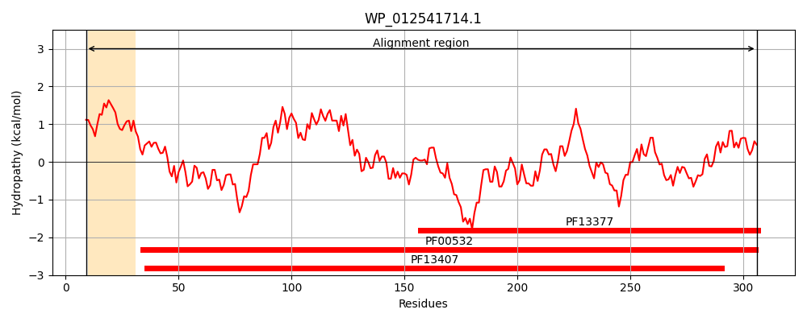
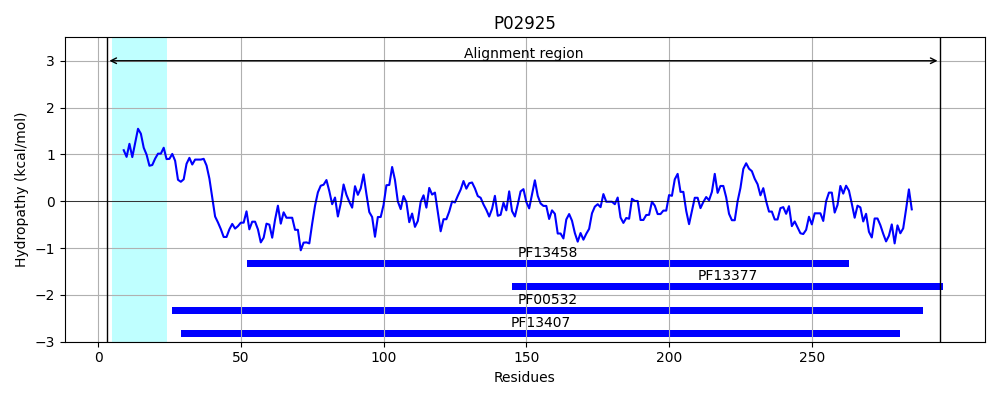
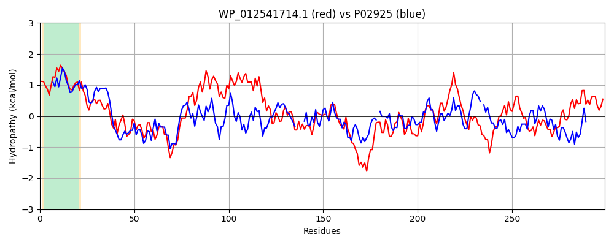

Hit Accession: P02925
Hit TCID: 3.A.1.2.1
Hit Description: gnl|BL_ORD_ID|8234 gnl|TC-DB|P02925|3.A.1.2.1 D-ribose-binding periplasmic protein precursor - Escherichia coli.
Mach Len: 299
e:0.000000
Query TMS Count : 1
Hit TMS Count: 1
TMS-Overlap Score: 1.000000
Predicted Substrates:CHEBI:10410;beta-D-ribopyranose
BLAST Alignment:
Score: 324 , Bit scores: 129 bits, E-value: 2.2e-35, Alignment length: 299, Percentage identity: 28
Query: 9 LRLLAVATTMLASMSFISAASAAGPTYALVQINQQALFFNLMNKGAQDAAKASGKDLVIFNSNDNPVAQNDAIENYIQQGVKGILVAAIDVNGIMPAVKEAAAANIPVIAIDAVLPAGPQAAQVGVDNIEGGRIIGQYFVDYVQKEMGGQAR-LGIVGALNSAIQNQRQKGFEETLKSNPKITIANVVDGQNVQDKAMTAAENLITGNPDLTAIYATGEPALLGAIAAVENQGRQKDIKVFGWDLTAKAISGMDGGYVTAVLQQDPEKMGAEALNALNSITSGKTVPKTILVPATVVTK 306
++ LA + +A + +SA + A T ALV FF + GAQ A G +LV+ +S +NP + +++ +G K +L+ D + + AVK A ANIPVI +D G + + DN+ GG+I G DY+ K+ G A+ + + G ++ +R +GF++ + ++ K + + K + +NL+T +PD+ A++A + LGA+ A++ G+ D+ V G+D T ++ G + A + Q P+++GA+ + + + G+ V V +V K
Sbjct: 3 MKKLATLVSAVALSATVSANAMAKDTIALVVSTLNNPFFVSLKDGAQKEADKLGYNLVVLDSQNNPAKELANVQDLTVRGTKILLINPTDSDAVGNAVKMANQANIPVITLDRQATKGEVVSHIASDNVLGGKIAG----DYIAKKAGEGAKVIELQGIAGTSAARERGEGFQQAVAAH-KFNVLASQPADFDRIKGLNVMQNLLTAHPDVQAVFAQNDEMALGALRALQTAGK-SDVMVVGFDGTPDGEKAVNDGKLAATIAQLPDQIGAKGVETADKVLKGEKVQAKYPVDLKLVVK 295 | Protein Hydropathy Plots: |
|---|
|  |  |
Pairwise Alignment-Hydropathy Plot:
|
|---|
|  |